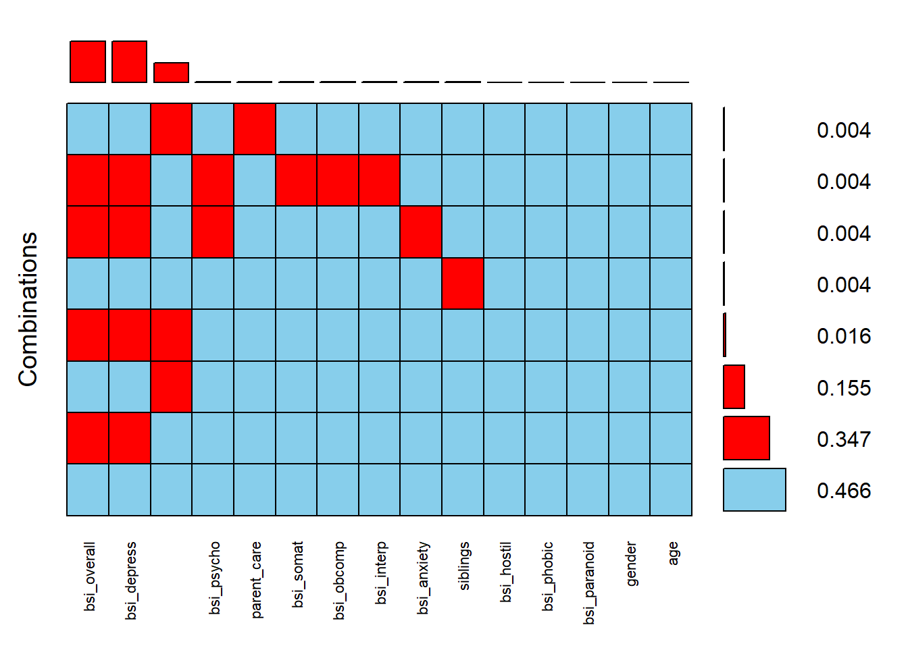
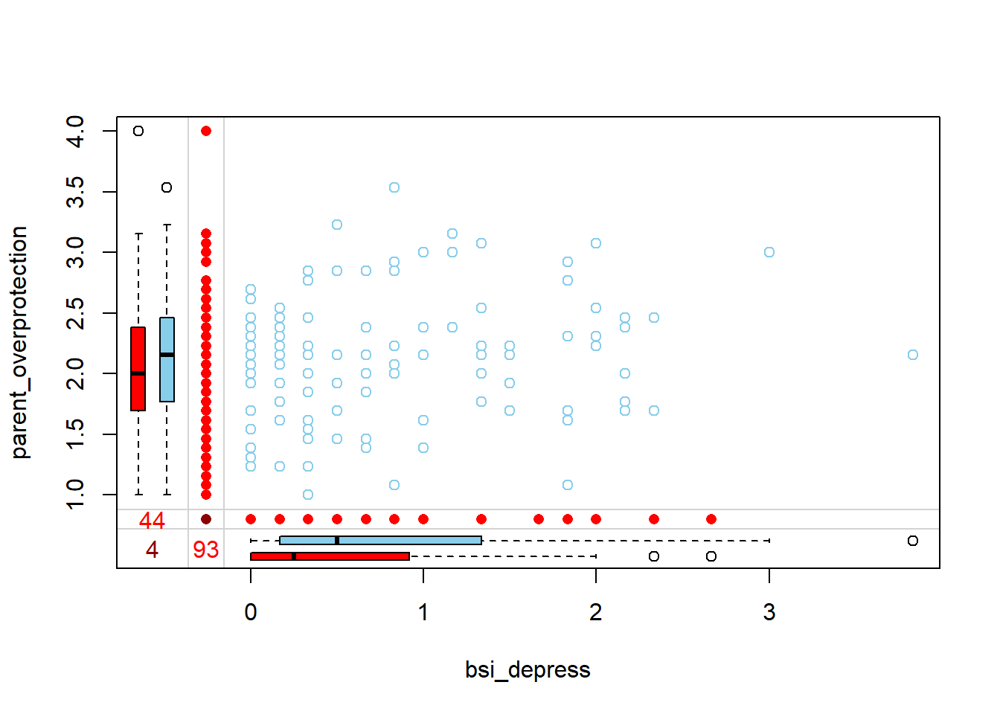
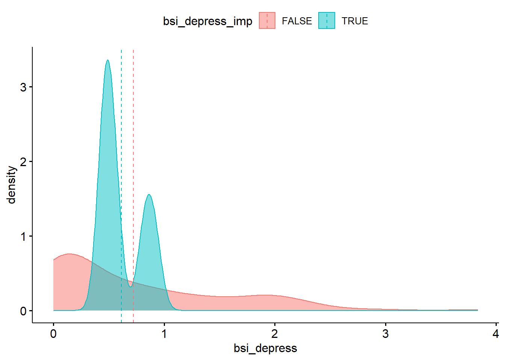
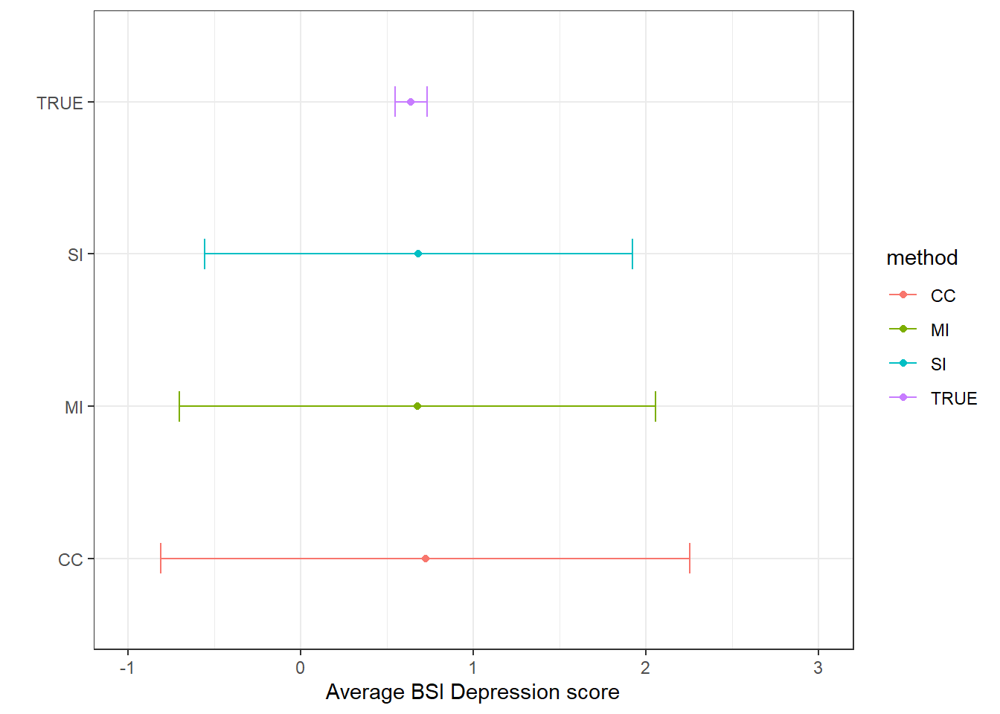

library(VIM)
library(tidyverse)
load("C:/Box/Teaching/456/in class worksheets/mi_example.Rdata")Multiple Imputation Demo
Setup
Import data & load libraries. VIM Vignette
This example uses a modified version of the Parental HIV data set. Codebook
Identify missing
Entire data set
table(is.na(hiv)) |> prop.table()
FALSE TRUE
0.96330127 0.03669873 Only 3.7% of all values in the data set are missing.
Examine missing data patterns of scale variables.
The parental bonding and BSI scale variables are aggregated variables, meaning they are sums or means of a handful of component variables. That means if any one component variable is missing, the entire scale is missing. E.g. if y = x1+x2+x3, then y is missing if any of x1, x2 or x3 are missing.
scale.vars <- hiv %>% select(parent_care:bsi_psycho, gender, siblings, age)
aggr(scale.vars, sortVars=TRUE, combined=TRUE, numbers=TRUE, cex.axis=.7)
Variables sorted by number of missings:
Variable Count
bsi_overall 93
bsi_depress 93
parent_overprotection 44
bsi_psycho 2
parent_care 1
bsi_somat 1
bsi_obcomp 1
bsi_interp 1
bsi_anxiety 1
siblings 1
bsi_hostil 0
bsi_phobic 0
bsi_paranoid 0
gender 0
age 034.7% of records are missing both bsi_overall and bsi_depress This makes sense since bsi_depress is a subscale containing 9 component variables and the bsi_overall is an average of all 52.
Another 15.5% of records are missing parental_overprotection.
Is there a bivariate pattern between missing and observed values of bsi_depress and parent_overprotection?
marginplot(hiv[,c('bsi_depress', 'parent_overprotection')])
When someone is missing parent_overprotection, they have a lower bsi_depress score. Those missing bsi_depress have a slightly lower parental_overprotection score. Only 4 individuals are missing both values.
Single Imputation
Use predictive mean matching on bsi_depress using gender, siblings and age as predictors. Yes this model could be improved.
- Impute using functions in VIM.
depress_regr_imp <- regressionImp(bsi_depress ~ gender + siblings + age, hiv)Look at the data - see which ones have been imputed.
- Visualize imputed data patterns
ggpubr::ggdensity(depress_regr_imp, x = "bsi_depress", add="mean",
color = "bsi_depress_imp", fill = "bsi_depress_imp")
It seems like only values around 0.5 and 0.8 were imputed values for bsi_depress. The imputed values don’t quite match the distribution of observed values.
Multiple Imputation
- Create \(m\) imputed datasets
dep.imp1 <- regressionImp(bsi_depress ~ gender + siblings + age, hiv)
dep.imp2 <- regressionImp(bsi_depress ~ gender + siblings + age, hiv)
dep.imp3 <- regressionImp(bsi_depress ~ gender + siblings + age, hiv)- Calculate the point estimate \(Q\) and the variance \(U\) from each imputation.
# point estimate for the average bsi depression
(dep.Q <- c(mean(dep.imp1$bsi_depress),
mean(dep.imp2$bsi_depress),
mean(dep.imp3$bsi_depress)))[1] 0.6820596 0.6820596 0.6820596They’re identical! So this imputation method is the model predicted mean \(\hat{\mu}_{Y|X}\). Let’s add a residual to the imputed values so we’re not imputing the exact same value for each missing data point.
# first find the rows that were imputed
(which.imp.nomiss <- which(dep.imp1$bsi_depress_imp)) [1] 2 4 5 9 13 14 15 17 22 25 30 36 37 38 40 41 42 45 48
[20] 55 58 59 60 61 64 68 69 70 71 73 79 80 82 83 85 86 88 92
[39] 93 94 105 109 110 112 114 116 118 121 126 130 131 132 133 135 139 140 143
[58] 146 148 149 154 155 156 157 160 161 168 173 174 178 180 182 184 186 193 195
[77] 199 202 206 207 208 212 215 220 229 230 233 237 238 243 245 249 250n.imp <- length(which.imp.nomiss)
# Calculate a residual e ~ N(0, sd(y|x))
# get RMSE from linear regression as the estimate of var(y|x)
lm.dep <- lm(bsi_depress ~ gender + siblings + age, data=hiv)
rmse <- sqrt(summary(lm.dep)$sigma)
e1 <- rnorm(n.imp, mean=0, sd=rmse)
e2 <- rnorm(n.imp, mean=0, sd=rmse)
e3 <- rnorm(n.imp, mean=0, sd=rmse)
dep.imp1$bsi_depress[which.imp.nomiss] <- dep.imp1$bsi_depress[which.imp.nomiss] + e1
dep.imp2$bsi_depress[which.imp.nomiss] <- dep.imp2$bsi_depress[which.imp.nomiss] + e2
dep.imp3$bsi_depress[which.imp.nomiss] <- dep.imp3$bsi_depress[which.imp.nomiss] + e3
(dep.Q <- c(mean(dep.imp1$bsi_depress),
mean(dep.imp2$bsi_depress),
mean(dep.imp3$bsi_depress)))[1] 0.6918364 0.7156541 0.6216871Variance of that point estimate (the mean)
n.d <- length(dep.imp1$bsi_depress)
(dep.U <- c(sd(dep.imp1$bsi_depress)/sqrt(n.d),
sd(dep.imp2$bsi_depress)/sqrt(n.d),
sd(dep.imp3$bsi_depress)/sqrt(n.d)))[1] 0.04881475 0.05085152 0.05184113- Pool estimates
(dep.q.bar <- mean(dep.Q)) # average estimate[1] 0.6763925dep.u.bar <- mean(dep.U) # average variance
dep.B <- sd(dep.Q) # variance of averages
(dep.T <- dep.u.bar + ((3+1)/3)*dep.B) # Total variance of estimate[1] 0.115636Comparison of Estimates
Calculate the estimate, SE and 95% CI for the average BSI depression score under the following frameworks.
- Complete Case
dep.mean.cc <- mean(hiv$bsi_depress, na.rm=TRUE)
dep.se.cc <- sd(hiv$bsi_depress, na.rm=TRUE)/sqrt(length(dep.mean.cc))
(dep.cc <- data.frame(var = "bsi_depress", method = "CC",
mean=dep.mean.cc, se = dep.se.cc,
cil = dep.mean.cc-1.96*dep.se.cc, ciu = dep.mean.cc+1.96*dep.se.cc)) var method mean se cil ciu
1 bsi_depress CC 0.7225738 0.7818742 -0.8098996 2.255047- Single Imputation
dep.mean.si <- mean(depress_regr_imp$bsi_depress)
dep.se.si <- sd(depress_regr_imp$bsi_depress)/sqrt(length(dep.mean.si))
(dep.si <- data.frame(var = "bsi_depress", method = "SI",
mean=dep.mean.si, se = dep.se.si,
cil = dep.mean.si-1.96*dep.se.si, ciu = dep.mean.si+1.96*dep.se.si)) var method mean se cil ciu
1 bsi_depress SI 0.6820596 0.631442 -0.5555667 1.919686- Multiple Imputation
(df <- 2*(1+(dep.u.bar/(4*dep.B))^2)) # degress of freedom[1] 2.133599t95 <- qt(.975, df) # critical value for 95% CI
(dep.mi <- data.frame(var = "bsi_depress", method = "MI",
mean=dep.q.bar,
se = sqrt(dep.T),
cil = dep.q.bar-t95*sqrt(dep.T),
ciu = dep.q.bar+t95*sqrt(dep.T))) var method mean se cil ciu
1 bsi_depress MI 0.6763925 0.3400529 -0.7023552 2.05514Summary
Create a table and plot that compares the point estimates and intervals for the average parental overprotection.
(summary.dep <- rbind(true.dep, dep.cc, dep.si, dep.mi)) var method mean se cil ciu
1 bsi_depress TRUE 0.6384409 0.0468723 0.5465712 0.7303106
2 bsi_depress CC 0.7225738 0.7818742 -0.8098996 2.2550472
3 bsi_depress SI 0.6820596 0.6314420 -0.5555667 1.9196860
4 bsi_depress MI 0.6763925 0.3400529 -0.7023552 2.0551403ggplot(summary.dep, aes(x=mean, y = method, col=method)) +
geom_point() + geom_errorbar(aes(xmin=cil, xmax=ciu), width=0.2) +
scale_x_continuous(limits=c(-1, 3))+
theme_bw() + xlab("Average BSI Depression score") + ylab("")